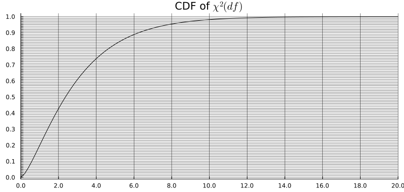

Introduction to Hypothesis Testing, Exam 2025
Exercice 1 : Test d’une préférence pour les sources d’énergie renouvelables ou non renouvelables
Nous cherchons à déterminer si les citoyens d’une région ont une quelconque préférence pour les sources d’énergie renouvelables (par exemple, solaire, éolienne) ou les sources d’énergie non renouvelables (par exemple, charbon, gaz naturel). Nous supposons que, a priori, il n’y a aucune préférence en moyenne. Nous interrogeons \(n\) individus, et nous notons \(X\) le nombre de répondants qui préfèrent les énergies renouvelables.
Questions :
- Formalisez le problème de test d’hypothèse, et définissez \(H_0\) et \(H_1\). Indiquez si ce test est unilatéral ou bilatéral.
- Nous interrogeons \(n=100\) individus, et \(X=58\) préfèrent les sources d’énergie renouvelables. Écrivez la p-valeur en fonction de \(F\), la fonction de répartition d’une distribution Binomiale Bin\((100,0.5)\).
- Écrivez une ligne de code qui calculerait la p-valeur exacte en Julia, Python, ou R.
2*(1-cdf(Binomial(100, 0.5), 57)) # Julia
2*(1-pbinom(57,100,0.5)) # R
# Résultat: 0.133- Donnez une approximation de la p-valeur en utilisant une approximation gaussienne et le graphique de la fonction de répartition de \(\mathcal N(0,1)\) fourni dans le sujet. Quelle est votre conclusion ?
- Redéfinissez l’hypothèse alternative \(H_1\) et calculez une p-valeur approximative si nous cherchons à déterminer si les citoyens ont une préférence pour :
- les sources d’énergie renouvelables.
- les sources d’énergie non renouvelables. Quelles sont vos conclusions pour ces deux autres problèmes ?

Exercice 2 : Surveillance environnementale de la pollution fluviale
Une agence environnementale surveille les niveaux de pollution d’une rivière pour déterminer si une usine à proximité provoque une augmentation de la concentration de produits chimiques nocifs. La concentration cible pour un produit chimique spécifique est de \(15 \, \text{ppm}\) (parties par million), ce qui est considéré comme sûr pour la vie aquatique. Pour un échantillon de \(n = 20\) prélèvements d’eau effectués en aval de l’usine, la concentration moyenne empirique est \(\bar{X}_n = 16,3 \, \text{ppm}\), et la variance empirique est \(S^2_n = 2,4 \, \text{ppm}^2\).
A priori, on suppose que la rivière respecte le seuil de pollution sans danger de \(15 \, \text{ppm}\).
Nous visons à tester, avec un niveau de signification \(\alpha = 0,05\), si la concentration chimique en aval dépasse le seuil de sécurité, indiquant une pollution provenant de l’usine.
Questions :
- En utilisant une hypothèse Gaussienne, formalisez le problème de test d’hypothèse et définissez \(H_0\) et \(H_1\). S’agit-il d’un test unilatéral ou bilatéral ?
- Définissez la statistique de test. Quelle est sa distribution sous \(H_0\) ?
- Déterminez la zone de rejet. Vous pouvez utiliser une approximation Gaussienne et le graphe de l’exercice 1.
- Ecrivez une ligne de code permettant de calculer le seuil de rejet exact.
quantile(TDist(19), 0.95) # julia
qt(0.95,n) # R, (1.73 légèrement plus grand que 1.6)- La rivière présente-t-elle une concentration chimique accrue qui pourrait indiquer une pollution provenant de l’usine ?
Exercice 3 : Analyse de la distribution des habitats lors de la migration des oiseaux
Un chercheur en faune sauvage étudie le comportement d’une certaine espèce d’oiseaux qui migrent vers une réserve naturelle. Le chercheur a une hypothèse sur la façon dont les oiseaux se répartissent entre différents types d’habitats dans la réserve. La distribution attendue, basée sur des données historiques, est la suivante :
- Prairie : 40%
- Zones humides : 30%
- Forêts : 20%
- Zones rocheuses : 10%
Pour tester cette hypothèse, le chercheur observe 200 oiseaux et enregistre leurs préférences d’habitat. Les comptages observés sont les suivants :
| Habitat | Prairie | Zones humides | Forêts | Zones rocheuses |
|---|---|---|---|---|
| Observé | 90 | 60 | 30 | 20 |
Questions :
- Formalisez le problème de test d’hypothèse et définissez \(H_0\) et \(H_1\).
- Calculez les effectifs attendus.
- Calculez la statistique du chi-deux.
- Déterminez le degré de liberté \(df\) de la statistique du chi-deux, et lisez la p-value sur le graphique suivant de la fonction de répartition.
- Quelle est votre conclusion ?

Exercice 4
Productivité des employés entre départements
Une entreprise souhaite évaluer si un nouveau style de management a eu un effet uniforme sur la productivité des employés dans cinq départements. Chaque département a adopté une variation spécifique du style de management pendant trois mois, et l’entreprise a enregistré le nombre moyen de tâches accomplies par employé durant cette période.
Données :
| Département | 1 | 2 | 3 | 4 | 5 |
|---|---|---|---|---|---|
| Nombre d’employés | 12 | 10 | 8 | 9 | 11 |
| Moyenne des tâches accomplies | 72,4 | 68,9 | 75,6 | 74,3 | 69,7 |
| Variance des tâches | 8,5 | 9,2 | 10,1 | 7,8 | 9,6 |
L’entreprise cherche à comprendre si les niveaux de productivité varient significativement entre les départements, indiquant que les styles de management pourraient avoir des impacts différents.
Soit \(d=5\) le nombre de départements et \(N_{\text{tot}} = 50\) le nombre total d’employés. Pour tout département \(j\), nous notons \(N_k\) le nombre d’employés dans le département \(k\), et \(P_{ik}\) le nombre de tâches accomplies par l’employé \(i\) dans le département \(k\). Nous supposons que les \(P_{ik}\) sont indépendants et suivent une distribution normale de moyenne \(\mu_k\) et de variance \(\sigma^2\).
Nous écrivons \[ \left.\begin{array}{cl} \overline P_k &= \frac{1}{N_k} \sum_{i=1}^{N_k} P_{ik}\\ \overline{P} &= \frac{1}{N_{\mathrm{tot}}} \sum_{k=1}^d N_k\overline P_{k}\end{array}\right. \left.\begin{array}{cl} V_k &= \frac{1}{N_k}\sum_{i=1}^{N_k} (P_{ik} - \overline P_k)^2 \\ V_W &= \frac{1}{N_{\mathrm{tot}}} \sum_{k=1}^d N_kV_k\\ V_B &= \frac{1}{N_{\mathrm{tot}}}\sum_{k=1}^{d} N_k(\overline P_k - \overline P)^2\\ V_{T} &= \frac{1}{N_{\mathrm{tot}}}\sum_{k=1}^d\sum_{i=1}^{N_k} (P_{ik} - \overline P)^2 \end{array} \right. \]
Questions
- Définissez les hypothèses du problème pour tester si les styles de management ont eu un impact uniforme sur la productivité.
- Donnez une brève interprétation de chacune des quantités \(\overline{P}_k\), \(\overline{P}\), \(V_k\), \(V_W\), \(V_B\), \(V_T\).
- Démontrez la formule d’analyse de la variance : \(V_T = V_W + V_B\)
- Calculez \(\overline{P}\), \(V_W\), \(V_B\), et \(V_T\).
- Exprimez la statistique de test ANOVA en termes de \(V_W\) et \(V_B\).
- Quelles sont les distributions de \(N_k V_k\) et de \(N_{\mathrm{tot}}V_W\) sous \(H_0\) ? Changent-elles sous \(H_1\) ?
- Rappelez la définition de la statistique de test ANOVA, donnez sa distribution \(\mathcal D\) sous \(H_0\) et effectuez le test ANOVA au niveau \(\alpha =0,05\). On donne les quantiles \(0.05\) et \(0.95\) de \(\mathcal D\): \(0.18\) and \(2.58\). Concluez si la productivité diffère significativement entre les départements.
Questions de cours
- Rappelez la définition d’une statistique de test \(\psi\) et d’un test (ou règle de décision) \(T\).
- Quels sont les deux types d’erreur que nous pouvons commettre ?
- Pour une statistique de test \(\psi\) donnée et un problème de test bilatéral, rappelez la définition de la p-valeur.
- Énoncez le théorème de Neyman-Pearson.